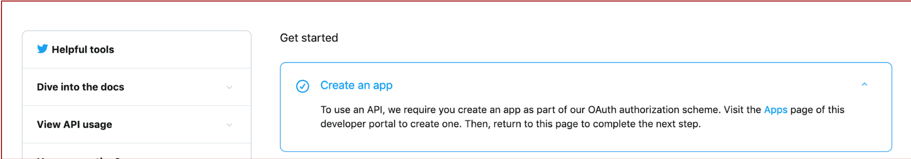
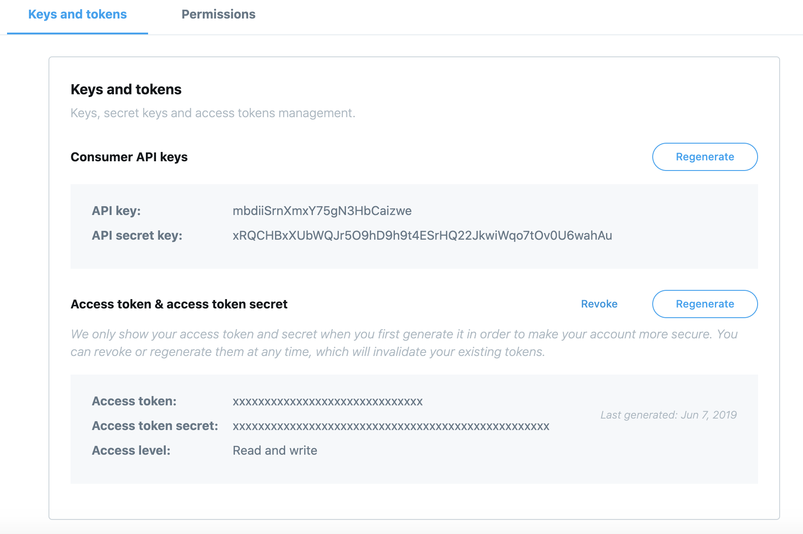

Análisis de textos a través de Twitter
por Nerea Luis @sailormerqury
Cómo obtener tus API keys de Twitter
Una vez Twitter te ha otorgado acceso a su portal de desarrolladores, llega el momento de crear la primera aplicación para generar las claves.

-
Dirígete a https://developer.twitter.com/en/apps y pulsa en Create an app


-
Para crear la app necesitarás darle un nombre, una descripción, una URL y explicar cómo será utilizada. Recuerda que, en este caso, la principal funcionalidad será la de extraer tweets y analizar su sentimiento. Para la URL que te piden puedes poner tu propio Twitter.

- No copies el texto de ejemplo de forma literal. Indica que estás interesado en analizar el sentimiento de un conjunto de tweets y que los fines son no comerciales, practicar y aprender Machine Learning utilizando como fuente los datos de Twitter.

¡Enhorabuena! Ya tienes tu app, podrás encontrarla en el siguiente listado siempre que tu sesión esté iniciada https://developer.twitter.com/en/apps
-
El siguiente paso consiste en conseguir las API keys que te permitirán descargar los tweets en tiempo real. Para ello haz click en la aplicación que has creado y diríguete a la pestaña Keys and Tokens

-
En esta sección encontrará las claves únicas que permiten contectarte a Twitter a través de tu aplicación y usuario. Son secretas, por lo que sólo deberán aparecer en tu código fuente exclusivamente cuando vayas a descargar tweets de la red social.

De todas formas, si ha pasado cierto tiempo o ya no vas a usar tus claves, se pueden generar o revocar respectivamente en esta misma sección pulsando en Regenerate o revoke.

-
Recuerda que necesitarás estas claves para el siguiente paso del workshop.